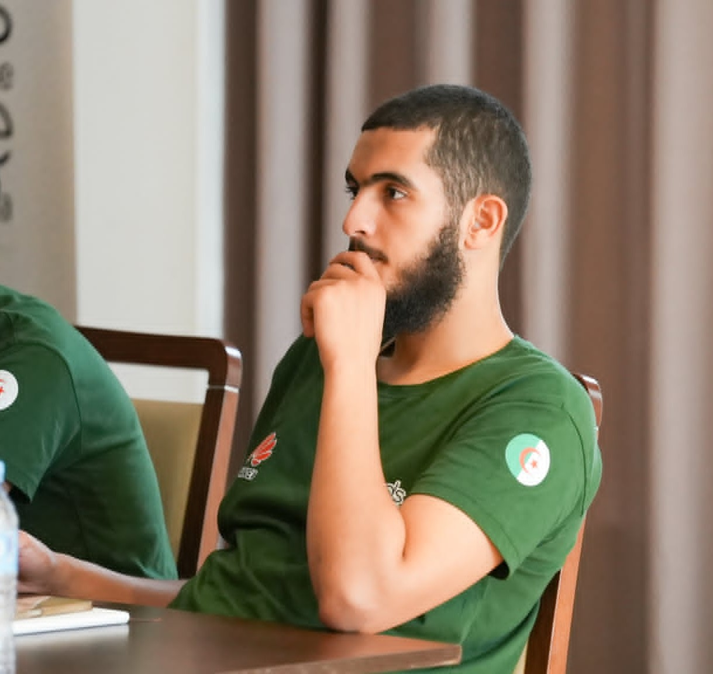

Arabic Dialect Identification
Identifying and analyzing regional Arabic varieties in social media text.
Research · Engineering · Algeria
PhD Student in Artificial Intelligence
AI/NLP Engineer · Full-Stack Developer
Exploring Arabic language technologies, dialect identification and transformer-based NLP — while building practical software systems.

01 / Profile
My work sits at the intersection of Arabic NLP research and practical software engineering.
I am a PhD student in Artificial Intelligence at the University of Naama / University Centre Salhi Ahmed of Naama. My doctoral research investigates Arabic dialect identification in social media text, with an interest in deep learning, transformer models and the challenges of dialectal variation.
Alongside research experimentation, I build data-driven applications and full-stack systems. My academic work also includes teaching computer science, preparing practical sessions and supporting students in laboratory settings.
02 / Questions & methods
Studying how language models represent and classify Arabic varieties in real-world text.
Identifying and analyzing regional Arabic varieties in social media text.
Text preprocessing, representation and classification for Arabic language technologies.
Fine-tuning and evaluating pretrained language models for Arabic NLP tasks.
Working with noisy, informal and user-generated dialectal text.
Controlled experimentation with transformer architectures and neural NLP models.
Examining model behavior across Arabic dialects and country-level labels.
Arabic dialect identification · noisy user-generated text · normalization · transformer models · evaluation · cross-dialect generalization
03 / Selected work
A selection of research experiments, academic tools and software products.
Earlier work is kept in context—not hidden, but no longer the headline.
04 / Scholarly work
Titles below are listed on my ResearchGate profile. Venue, authorship and publication status are not shown here where they could not be independently confirmed.
05 / Academic path
Teaching, research and technical foundations.
Computer science teaching, lecture preparation, practical sessions, laboratory activities and student assessment.
Arabic dialect identification, preprocessing and normalization, transformer fine-tuning, model evaluation and experimental design.
Exposure to information systems, databases and network infrastructure.
University of Naama
University of Naama
University of Naama
06 / Technical practice
Technologies used across research experiments and application development.
Open source & experiments
Repositories, research code and software projects are collected on GitHub.
07 / Get in touch
For research collaboration, AI/NLP projects, academic opportunities or software engineering work, reach out directly.
Email Mohammed